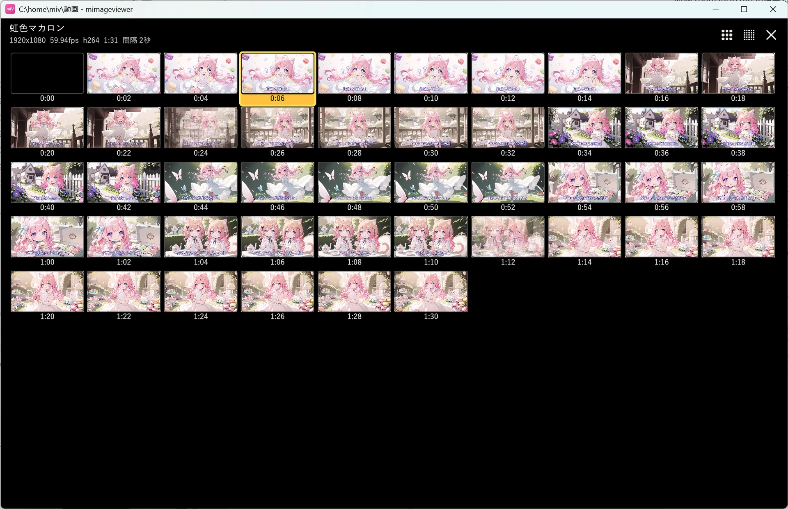
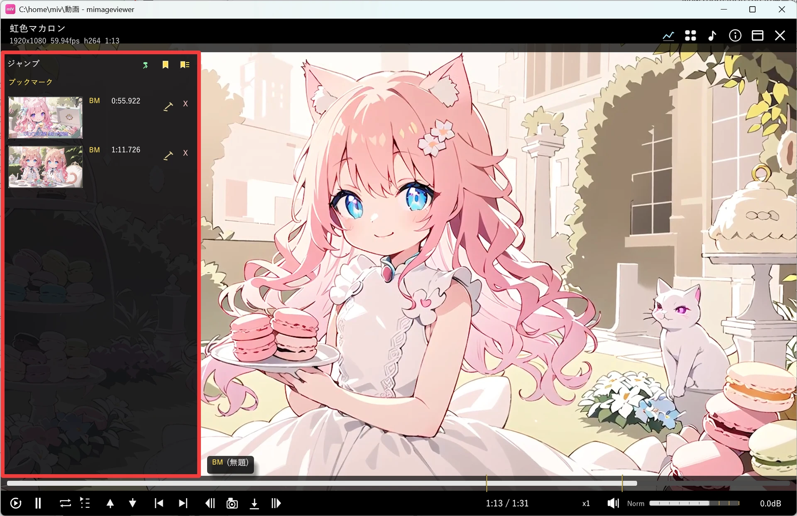

動画をもっと使いこなす
再生・シーク・倍速といった基本操作に慣れたら、次はもう一歩進んだ機能を使ってみましょう。 長い動画の中身を一目で見渡せる「タイル モード」、気になる場面に印を付ける「ブックマーク」、 チャプターへのジャンプ、そして今見ている場面をそのまま画像として保存する「フレーム キャプチャ」を紹介します。 基本の再生操作は動画再生のリファレンスを参照してください。
タイル モードで全体を見渡す
動画フルスクリーン中に S キー（または上部ホバーバーの ▦ ボタン）を押すと、 動画全体を一定間隔のサムネイルで一覧表示する「タイル モード」に切り替わります。 長い動画の展開を素早く把握したいときや、複数の動画を次々に見比べたいときに便利です。 間隔は動画の長さと画面サイズから自動的に選ばれます。

サムネイルをクリックするとその時刻へ移動し、もう一度クリックするとタイル モードを抜けて続きから再生します。 マウスホイールまたは Ctrl+↑/↓ で前後の動画へ移動でき、タイル表示はそのまま維持されます。
| キー / 操作 | 動作 |
|---|---|
| ← / → | 強調カーソルを前 / 次のサムネイルへ移動 |
| Ctrl+← / → | 強調カーソルを 1 行分移動 |
| Space / Enter | 強調カーソルの位置から再生 |
| Ctrl+ホイール | 列数（4 / 6 / 10 / 16 / 20 / 26 / 30）を切り替え |
| S 再押下 / Esc / × ボタン | タイル モードを解除（再生位置は変更されません） |
ブックマークで気になる場面に印を付ける
再生中に B キーを押すと、現在位置にブックマーク（🔖）を追加できます。 追加したブックマークへは J / K キーで前後にジャンプでき、 移動先のタイトルが画面右上にトーストで一瞬表示されます。
画面左端にカーソルを近づけると「左ジャンプパネル」が現れます。 ピン留め（📌）・ブックマーク（🔖）・チャプター（📑）の各位置がサムネイル付きで並び、 行をクリックするとその位置へ移動できます。ブックマークは ✏ で名前を編集、× で個別に削除できます。

| キー | 動作 |
|---|---|
| B | 現在位置にブックマークを追加 |
| J / K | 前 / 次のチャプター・ブックマーク・ピンへジャンプ |
| P | 現在のフレームを動画のグリッドサムネイルにピン留め（左ジャンプパネルの 📌 ボタンと同じ） |
チャプターへ移動する
動画にチャプター情報が埋め込まれていれば、ブックマークと同じ J / K キーで 前後のチャプターへ直接ジャンプできます。左ジャンプパネルにも 📑 アイコン付きでチャプター位置が並びます。
画面右端にカーソルを近づけるとメタ情報パネルが開きます。動画にチャプター・タイトル・説明文が埋め込まれていれば、 その内容がここに一覧表示され、チャプター行をクリックしてその位置へ頭出しすることもできます。 I / Tab キーで、左右パネルの呼び出し方を「通常ホバー」と「クリック表示」で切り替えられます。
現在のフレームを保存する
気に入った場面をそのまま画像として残したいときは、Ctrl+S キーか、 下部 HUD の「キャプチャ パレット」にある保存ボタンを使います。 クリップボードへコピーしたいだけの場合は、同じキャプチャ パレットのコピー ボタンを使います。 保存先のフォルダや画像形式は設定メニュー →「環境設定…」→ キャプチャ保存で変更できます。
| キー / 操作 | 動作 |
|---|---|
| Ctrl+S / パレットの保存ボタン | 現在のフレームをキャプチャ保存フォルダへ保存 |
| パレットのコピー ボタン | 現在のフレームをクリップボードへコピー |
| Ctrl+Shift+← / → | 1 フレーム単位で前後へ移動して一時停止（保存したい場面の微調整に） |